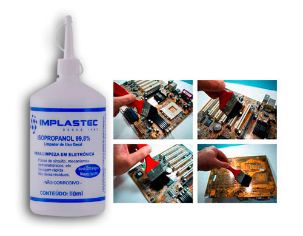
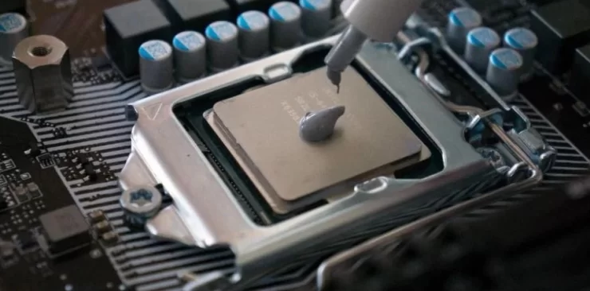
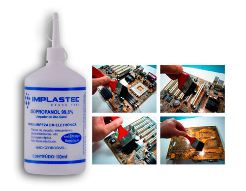

Qual a melhor forma para limpar a pasta térmica do processador?
Se você possui um computador, provavelmente já ouviu falar em pasta térmica. Essa substância é essencial para evitar o superaquecimento do processador. Porém, com o tempo, ela pode secar, acumular sujeira e prejudicar o desempenho da máquina. É por isso que a limpeza da pasta térmica é tão importante.
O que é a pasta térmica?
A pasta térmica é uma substância que é aplicada entre o processador e o dissipador de calor do computador. Sua principal função é preencher as imperfeições entre as superfícies do processador e do dissipador, permitindo que o calor gerado pelo chip seja transferido para o dissipador com maior eficiência.
Preparação para a limpeza
Antes de começar a limpeza da pasta térmica atualmente aplicada no processador, é importante se preparar corretamente. Abaixo, listamos alguns itens necessários e cuidados a serem tomados antes de iniciar o processo:
Álcool isopropílico (ou pasta térmica removedora);
Cotonetes (ou pincel);
Pano de limpeza;
Luvas (opcional).
Cuidados antes de iniciar a limpeza
Desligue o computador e desconecte-o da fonte de alimentação. Remova todos os cabos e periféricos conectados ao equipamento. Se certifique de se livrar da eletricidade estática. Verifique também se suas mãos estão limpas e secas.
É importante ressaltar que cada computador pode ter um processo de remoção do processador diferente. Alguns exigem o uso de chaves de fenda para a remoção do cooler. Outros trabalham com encaixes que dispensam a necessidade de ferramentas. Por isso é importante verificar o manual do usuário antes de começar. Com as ferramentas corretas e os cuidados necessários, a preparação para a limpeza da pasta térmica será rápida e segura.
Depois de se certificar de todas essas informações, é só desencaixar o cooler do processador e removê-lo com cuidado. Em seguida, solte a trava do processador e remova-o da placa-mãe com cuidado.
Limpeza com álcool isopropílico
O álcool isopropílico é um líquido incolor e inflamável que é frequentemente utilizado na limpeza de componentes eletrônicos, incluindo computadores. Ele é um excelente solvente para a remoção de resíduos de pasta térmica, poeira e outros detritos que possam se acumular nos componentes eletrônicos ao longo do tempo.

1: Coloque uma pequena quantidade de álcool isopropílico em um cotonete, pincel ou pano macio;
2: Aplique algumas gotas na superfície da pasta térmica e comece a esfregar delicadamente;
3: Repita o processo até que toda a pasta térmica seja removida;
4: Use um pano de limpeza para remover o excesso de álcool.
Cuidados após a limpeza da pasta térmica

Depois de limpar a pasta térmica antiga do processador, é importante tomar alguns cuidados para garantir que o computador continue funcionando corretamente.
Por exemplo, ao aplicar a nova camada de pasta térmica, é recomendável colocar apenas uma pequena quantidade no centro do processador. Não precisa nem espalhar. Coloque apenas uma gota no centro do chip e depois coloque o cooler por cima.
Depois de aplicar uma nova camada de pasta térmica e reinstalar todos os componentes, é interessante executar um teste de estresse no processador. Isso serve para verificar se a temperatura está dentro dos limites adequados. Se possível, monitore a temperatura da CPU por alguns dias após a limpeza para garantir que a pasta térmica nova esteja funcionando corretamente.
Conclusão
A limpeza ou troca da pasta térmica é uma tarefa importante para garantir que o seu computador continue funcionando corretamente e sem problemas de superaquecimento.
